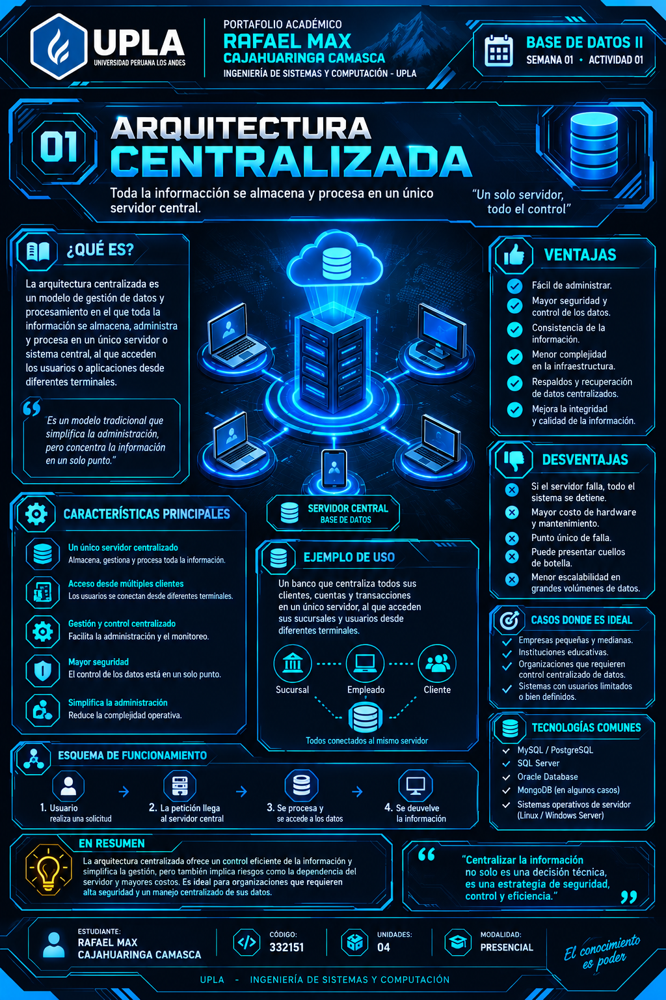
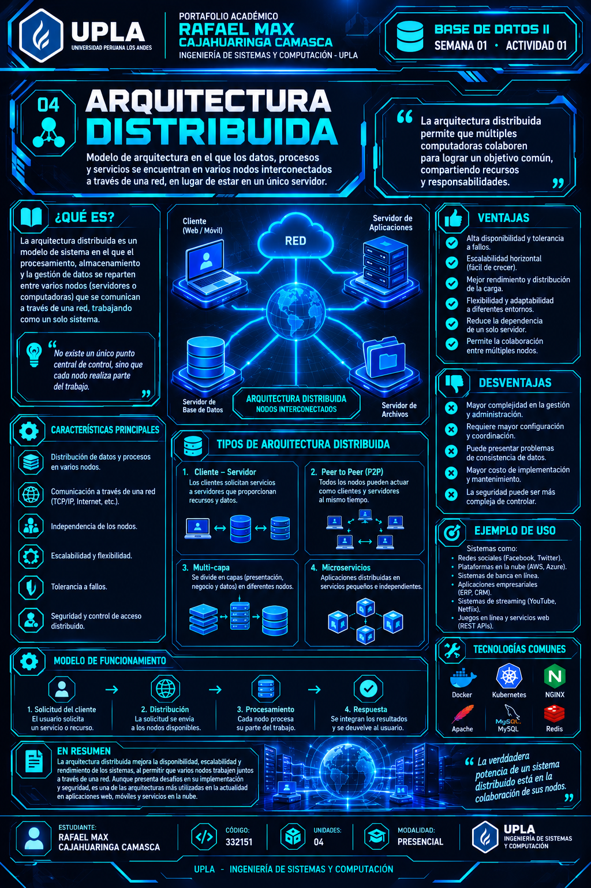
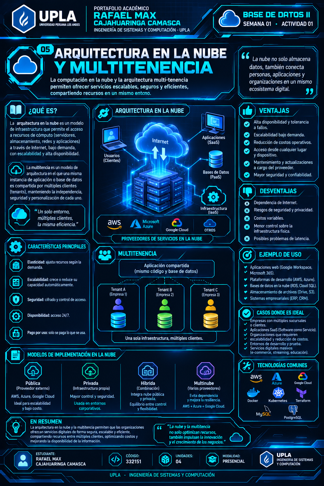
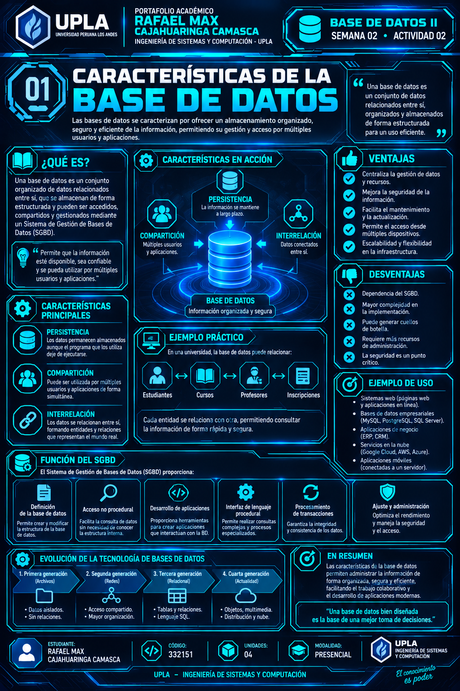
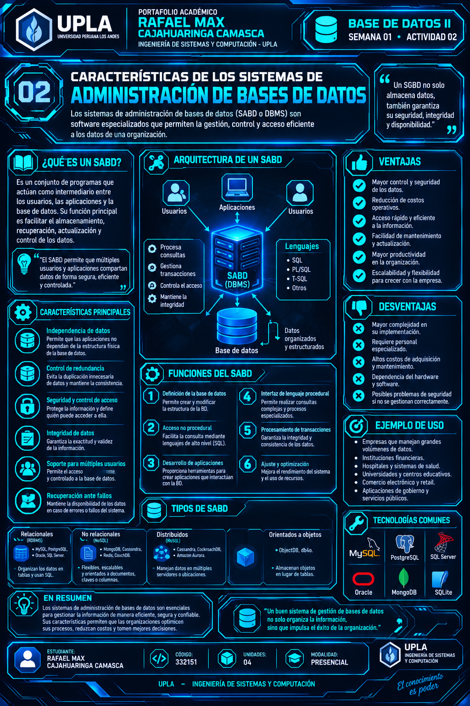
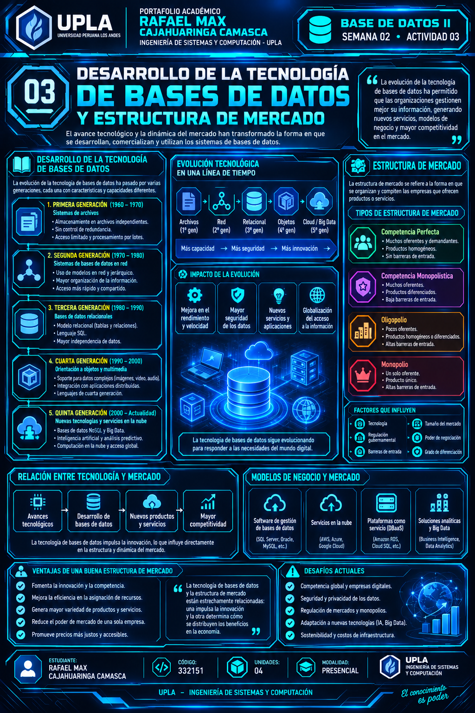
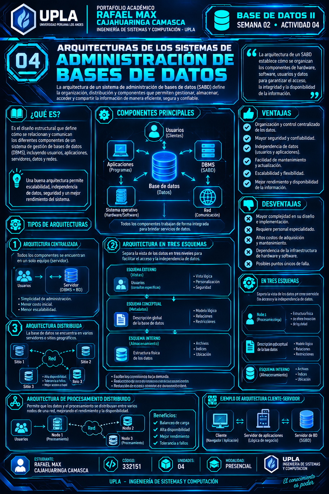
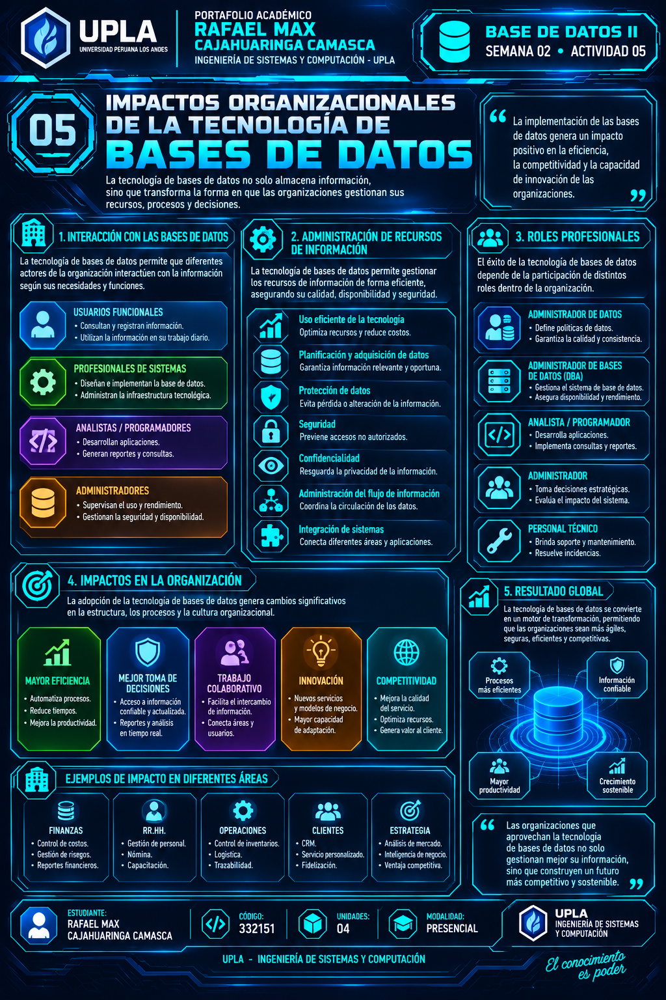

INFOGRAFÍA 01
Arquitectura Centralizada
Organización de los recursos de datos en un servidor central.
Ver infografíaEvidencias y actividades desarrolladas durante la primera semana de la asignatura Base de Datos II.
Análisis de los principales modelos de arquitectura utilizados en sistemas de bases de datos.

Organización de los recursos de datos en un servidor central.
Ver infografíaComunicación entre clientes y servidores para gestionar los datos.
Ver infografía
Distribución de datos y procesamiento entre diferentes nodos.
Ver infografía
Servicios de bases de datos alojados en plataformas cloud.
Ver infografíaInvestigación y análisis de conceptos fundamentales relacionados con las bases de datos y su administración.

Persistencia, interrelación y capacidad para compartir información.
Ver infografía
Funciones y capacidades de los sistemas de administración de bases de datos.
Ver infografía
Evolución tecnológica y comportamiento del mercado de sistemas de bases de datos.
Ver infografía
Independencia de datos, esquemas y procesamiento distribuido en los SGBD.
Ver infografía
Influencia de la tecnología de bases de datos en las organizaciones y toma de decisiones.
Ver infografíaMaterial académico correspondiente a la Semana 1.